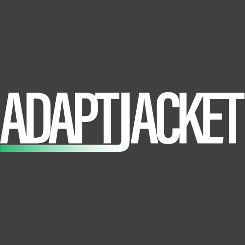
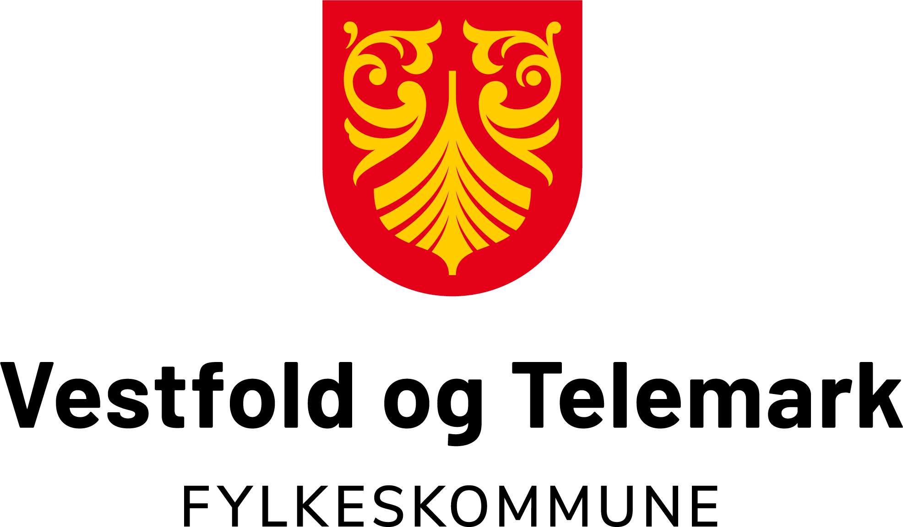

Om Oss
AdaptJacket har som formål å skape en bedre og mer praktisk fremtid. Våre innovasjoner innenfor trådløs teknologi og klessplagg kombineres til et fantastisk produkt.
Vi er med i bevegelsen av å integrere teknologi i klessplagg, og vi er stolte av hva vi har designet.


Om Skaperen
Denne nettsiden og produktet er designet av Simon, Porsgrunn VGS 1IKA. Dette har vært en oppgave vi har hatt på skolen som har vart i fra Uke 2 til Uke 6, 2023.
Her er en oversikt over kompetansemålene jeg har siktet mot:
| Vurdering med karakter | 5-6 |
|---|---|
| Produktutvikling: utvikle ide til produkt og dokumenterer med teknisk data (Elevheftet side 2) |
Foreslår ideer til et produkt og dokumenterer i stor grad valg av teknologi og virkemåte med teknisk data |
| Trådløs teknologi: sammenligne ulike typer elektromagnetisk stråling og hvordan de brukes i trådløs kommunikasjon (Elevheftet - side 3,4 og 5 og 9) |
Sammenligner og vurderer fordeler og ulemper ved ulike typer elektromagnetisk stråling med tanke på bruk i trådløs kommunikasjon, inkludert rekkevidde, energibruk og sikkerhet. |
| Internett flytskjema: beskrive hvordan et elektronisk kommunikasjonssystem virker, med internett som eksempel |
Lager et oversiktlig flytskjema som viser funksjonen og sammenhengen mellom hovedkomponentene i kommunikasjonssystemet for produktidéen og hvordan de fleste fungerer. |
| Nettside: formidle egen produktidé på nettside i henhold til innhold og krav om nettside |
Formidler produktidé på nettside med stor grad av måloppnåelse. Få og mindre viktige mangler i forhold til innhold og krav til nettside. |